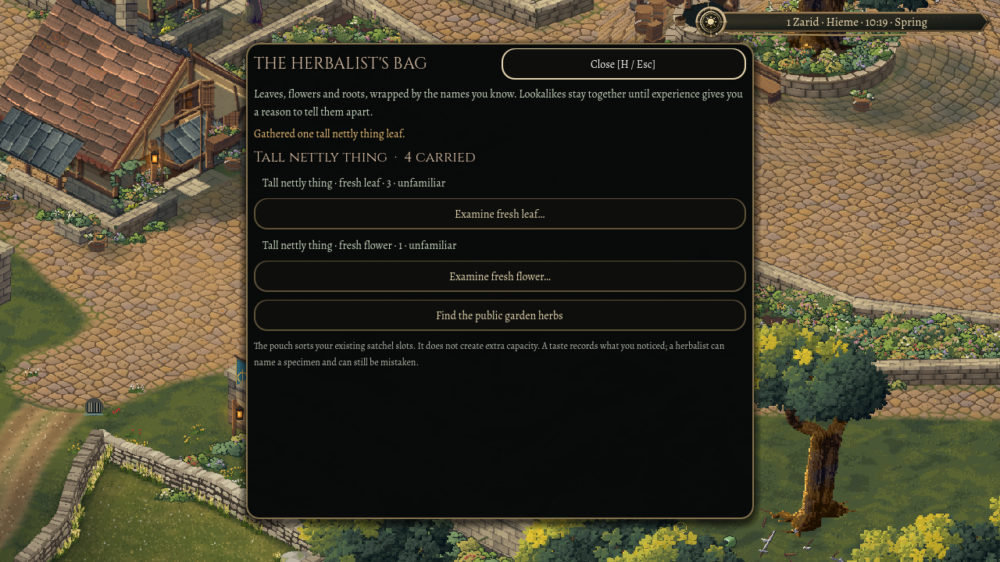

A name before a remedy
31 October 2026
A traveller's herb bag should remember what they have learned, including the things they have learned incorrectly.
Pick a plant you have never met and the bag has a choice to make. It can tell you the answer, or it can help you keep track of the question. This pass gives Oakwell the second kind of bag.
The player begins with a folded linen pouch. Gathered leaves and flowers stay real carried specimens, alongside the things bought from a trader. Opening the pouch sorts them into headings based on what the character knows. Parts, preparations and observations sit underneath. The pouch uses the existing satchel space; it adds organisation rather than extra capacity.
A name you would actually give it
An unfamiliar hairy plant might become a fuzzy-leaved weed or a tall nettly thing. Those little names are seeded for the character, so returning to a save does not rename everything. Two plants that look the same remain together until there is a reason to distinguish them.
That matters most when one of them is a lookalike. A tidy list of separate species would quietly give the game away. The underlying specimens still carry their real identity for the simulation. The bag's headings, descriptions and ordinary unknown-item icons cannot use that hidden answer.

Experience without certainty
Examining a specimen offers a separate choice to taste one part. It consumes that part and records sensations: bitter, watery, peppery, or an unsettled stomach. Tasting does not turn an unfamiliar plant into a certain identification.
The observation belongs to the specimen that was tried. During review, we found that the older inventory rules could combine nearby plants into one physical stack. That would let an observation bleed into another plant's history. Newly gathered specimens now keep their separate provenance, even when the pouch presents them together.
A herbalist can still offer a name, and an uncertain opinion remains an opinion. The bag can move a specimen under a named heading without rewriting what it really is.
Out of the menu and into the garden
The first gathering places are small authored patches beside Oakwell's public garden. Reach, walls, available leaves and flowers, and satchel space all matter. Picking leaves the roots in place. A full bag leaves the plant where it is.
The visit also exposed a small fault in the garden itself. A resident could reach a bench and keep shuffling beside it, because the final approach was closer to the seat than their body could fit. That last step now gives them enough room to sit.
Checks against older saves caught another detail: the new herb records were changing the saved form of older dropped specimens. Existing drops now keep their original format and contents. New discoveries should not disturb belongings already left in the world.
The new records travel with the existing town save: what was gathered, what remains on the plant, what was tasted, and whether the starting pouch has already been issued. Loading again must preserve the visit rather than supply another pouch or refill a picked plant.
This is a first usable town slice. Wider plant distribution, deeper preparation work and more ways to notice a plant's effects can build on it. The useful part is already a small adventure: find something, give it a name, keep a sample, and decide whether to trust what you think you know.